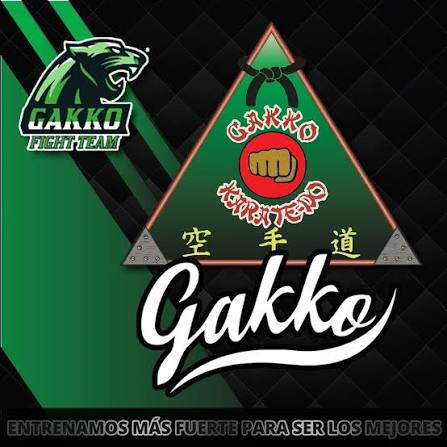

mi pagina hablara sobre mi deporte favorito el karate
¿que es el karate?
El karate es un deporte que sirve para entrenar mente, alma y cuerpo donde se busca que el alumno pula su cuerpo para poder realizar attakes posiciones y tecnicas, la mente para tolerar el dolor, el sacrificio que se hace, pensar el combate y sobre todo controilar los impulsos y el aolma se entrega a dios

la kata es la base del karate es su escencia sin esta el karate seria king boxin thaekuando muaithay etc. la kata es una sucecion de movimientos que llevan fuerza, elegancia velocidad y tecnica, estos simulan un combate y sirve para que el que la ejecuta simule esta pelea por lo que se califica gestos, gritlos, movimiento, velocidad, limpieza, tecnia, etc
el combate de karate se divide en varias clases depende mas que nada del sensei quien imparta el estilo pero en competencias se utiliza el fhigt-pointing o pelea por puntos
el numero de armas es como una kata pero entre dos o mas personas utilizando armas como katanas, chacos, palos, etc. tambien se pueden hacer con las manos desnudas y esto sirbe especial mente para demostraciones de el deporte aqui tambien se juntan acrobacias y otros movimientosas complejos que de ejecutarse mal se puede salir lastimado
el caracter es muy importante ya que este es el que se va ganando conforme a los años en el deporte ya que este mas que decirlo por seriedad en el deporte me refiero a ser humilde no presumir, no buscar peleas, no andar por la calle con el uniforme y con la cinta, entre otras cosas.
la diciplina es importante ya que sin disiplina no se puede mejorar en el deporte esto es algo muy importante por que esta disiplina se nota en el momento que te paras a mostrar una kata tambien se demuestra al momento de estar compitiendo, se demuestra en tu forma de expresarte y sobre todo e tu limpiesa
Sabias que el karate se divide en varios estilos como el estilo shutokan y tiene diferentes derivados como el taekuando
yo opino sinceramente que el karate es uno de los deportes mas bonitos, los competidores son de calidad y lo que te deja en la vida como diciplina y perzeverancia se puede notar en cada uno de sus practicantes
este tema me gusta por que es algo que me salvo de mi depresion cada entrenamiento me ardia y esl me hacia sentir vivo
del karate en gakko lo que mas me gusta son mis compañeros por que ya son como mi familia
y sobre todo aprendi que el karate es un arte que tiene muchos años de ser creada y se mantiene vigente asta la actualidad es uno de los deportes mas practixados a nivel mundial y sobre todo aprendi que mk familia esta en el karate.
Martinez lopez Santiago
5.B 2026
"Estoy armando una nave para viajar
Y escapar hacia el infinito
Cruzar el tiempo y espacio para explorar
Y encontrar la luna y soñar
Que paso sólo un rato más contigo
Que de mi lado no te vas a ir jamás
Estoy robándome un barco para navegar
Y surcar un mar de recuerdos
Para perderme en una isla en medio del mar
Y encontrar el tesoro y pensar
Que mi vida era completa contigo
Que si el tiempo pudiera regresar
Quiero saber si en algún lugar
El tiempo no pasa
Quiero pedir un minuto más
Decir sin hablar
Que quiero solo un rato más contigo
Que de mi lado no te vayas jamás
Quiero subir en un globo directo al cielo
En una nube buscarte para charlar
Y platicarte que intento
Todos los días la formula encontrar
Para poder regresar el tiempo
Quiero saber si en algún lugar
El tiempo no pasa
Quiero pedir un minuto más
Decir sin hablar
Que quiero sólo un rato más contigo
Que de mi lado no te vayas jamás"
~Darka de vete a la verch~